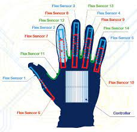
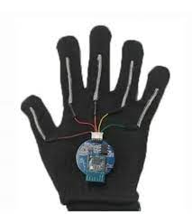
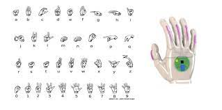
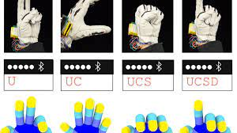

QUÉ ES
Este dispositivo son unos guantes desarrollados por cientificos de California, para personas con pérdida o anormalidad de la función anatómica y/o fisiólogica del sistema auditivo o del habla. Los guantes habilitan la facilidad para comunicarse con personas que no saben lenguaje de signos. Esto permite traducir el mensaje de lengua de signos a lengua oral en el momento.
MATERIALES
- Guante
- Polímeros elásticos ligeros
- Sensores electrónicos a lo largo de los dedos
- Placa arduino Micro
COMO FUNCIONA
La forma en que funciona este guante es mediante sensores, cuando tu te pones el guante y mueves la mano de manera que haces gestos o lenguaje de signos, con los sensores que vienen implementados en el guanto a lo largo de los dedos recopila la información y la manda a la placa arduino micro que registra los movimientos, esta información es mandada por bluethooth a un dispositivo que procede a traduce las palabras y reproducir las palabras oralmente.
VENTA
La venta de este dispositivo creo que no es disponible, pero en una página dice que los estudiantes de la universidad de California que crearon este dispositivo si lo pusieron a la venta por menos de 100 dolares .
ANTERIORES
Anteriormente existian dispositivos portatiles para traducir la lengua de signos en el momento pero la creación de este, fue un avance debido a su peso liviano. Aparte los polímeros elásticos ligeros es una pieza económica, y los sensores también y muy flexibles.
IMAGENES
   
INFORMACIÓN
Para poder infomarte más sobre este dispositivo, puedes acceder a estos enlaces los cuales te llevaran a páginas que te explican mas detalladamente sobre los guantes.
- https://www.visualfy.com/es/guantes-que-traducen-la-lengua-de-signos/
- https://as.com/meristation/2020/07/02/betech/1593726197_799619.html
- https://www.europapress.es/ciencia/laboratorio/noticia-desarrollan-guante-traduce-lenguaje-signos-habla-tiempo-real-20200629174742.html
- https://www.abc.es/ciencia/abci-guante-traduce-tiempo-real-lengua-signos-202007020300_noticia.html?ref=https%3A%2F%2Fwww.abc.es%2Fciencia%2Fabci-guante-traduce-tiempo-real-lengua-signos-202007020300_noticia.html